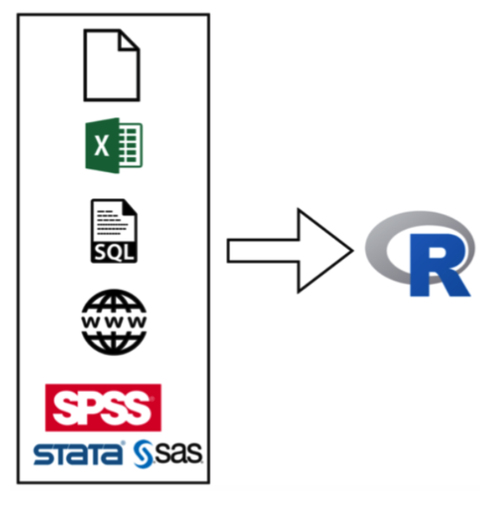
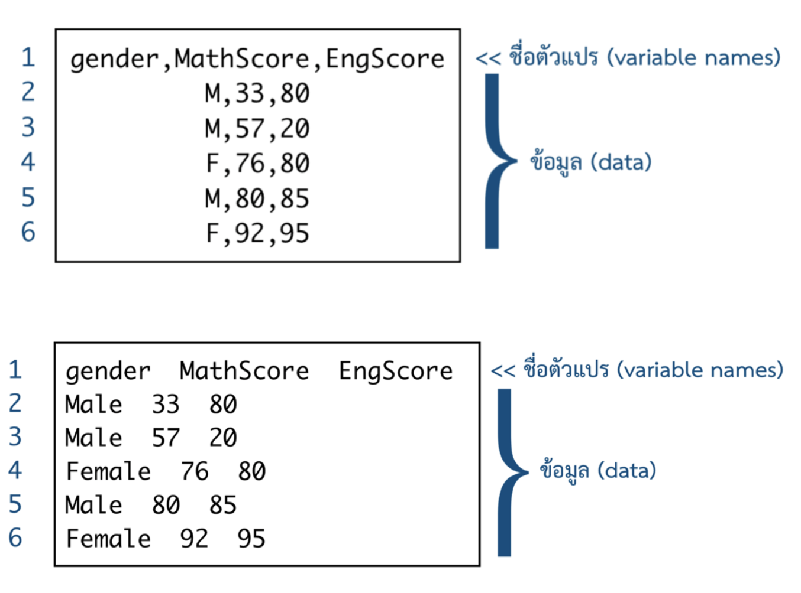
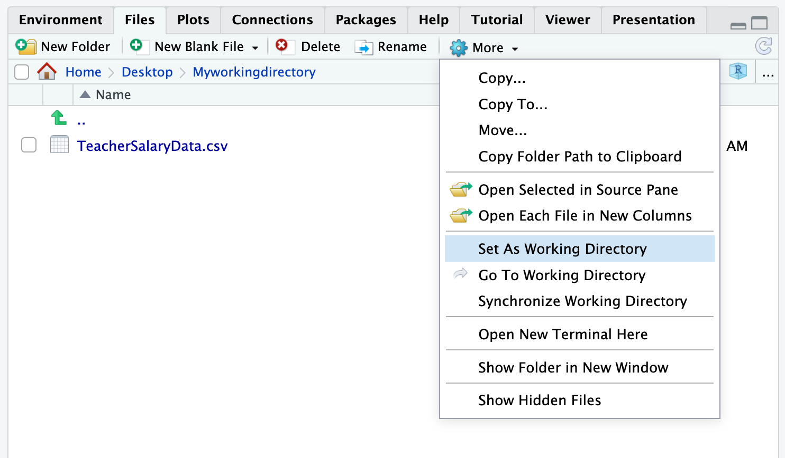

read.csv(file = "file.csv",
header = TRUE,
stringsAsFactors = TRUE)2. Importing Data
Practical Insight: Doing Data Science in Education with R

1. ประเภทของไฟล์ข้อมูล
ประเภทของไฟล์ข้อมูล
R สามารถดำเนินการร่วมกับไฟล์ข้อมูลที่หลากหลาย
Flat Files
MS Excel Files
Statistical softwares
Databases
Internet

2. Flat Files
Flat Files
เป็นไฟล์ข้อมูลที่จัดเก็บโดยไม่มีโครงสร้างตาราง และบันทึกอยู่ในรูปแบบไฟล์ข้อความ (text files)
Flat file จำแนกได้หลายประเภท ขึ้นอยู่กับลักษณะของตัวคั่นข้อมูล (separator) เช่น CSV, TSV

Importing CSV Files
การนําข้อมูล .csv เข้าสู่โปรแกรมสามารถใช้ฟังก์ชัน read.csv() โดยมีรูปแบบของคําสั่งดังนี้
อาร์กิวเมนท์สำคัญของ read.csv() ได้แก่
fileheaderstringsFactors
กิจกรรม : นำเข้า CSV file
- ดาวน์โหลด TeacherSalaryData.csv
- นำเข้าไฟล์ข้อมูล TeacherSalaryData.csv โดยพิมพ์คำสั่งต่อไปนี้
mydata <- read.csv(file = "TeacherSalaryData.csv",
header = TRUE)- สังเกตผลลัพธ์ที่ได้ ท่านสามารถนำไฟล์ข้อมูลดังกล่าวเข้าสู่ R ได้หรือไม่ ถ้าไม่ท่านคิดว่าเกิดปัญหาอะไร
กิจกรรม : การกำหนด Working Directory
การจะนำไฟล์ข้อมูลเข้าใน R ไฟล์ข้อมูลดังกล่าวจะต้องบันทึกอยู่ใน working directory ของ R

กิจกรรม : นำเข้า CSV file (revisited)
- ดาวน์โหลด TeacherSalaryData.csv
- กำหนด working directory ของ R ให้เป็น folder เดียวกันกับที่บันทึกไฟล์ข้อมูลในข้อ 1.
- นำเข้าไฟล์ข้อมูล TeacherSalaryData.csv โดยพิมพ์คำสั่งต่อไปนี้
mydata <- read.csv(file = "TeacherSalaryData.csv",
header = TRUE)- ลองพิมพ์คำสั่ง
head(mydata)ผลลัพธ์ที่ได้เป็นอย่างไร
3. Dataframe
กิจกรรม : Dataframe
ลองตรวจสอบสถานะของตัวแปร mydata ที่เก็บไฟล์ข้อมูล csv ในข้างต้นด้วยฟังก์ชัน class(mydata)
class(mydata)ผลลัพธ์ที่ได้เป็นอย่างไร?
Dataframe
มีโครงสร้างการเก็บข้อมูลแบบตารางคล้ายเมทริกซ์
สามารถเก็บข้อมูลต่างประเภทอยู่ภายใต้ dataframe เดียวกันได้
เป็นรูปแบบ input มาตรฐานตัวหนึ่ง ที่ใช้สำหรับการวิเคราะห์ข้อมูลใน R
ข้อมูลที่นำเข้าด้วย
read.csv()จะอยู่ในสถานะdata.frameโดยอัตโนมัติ
เราสามารถสร้าง dataframe ได้ด้วยวิธีการในทำนองเดียวกับการสร้างเมทริกซ์ แต่ใช้ฟังก์ชัน data.frame() แทน ดังรูปแบบต่อไปนี้
data.frame(var1, var2, var3, ..., varp)ตัวอย่างการสร้าง Dataframe
thai<-c(87,72,68,78,81,92)
math<-c(72,63,65,74,89,91)
gender<-c("M","F","M","F","F","M")
data<-data.frame(gender,thai,math)
data gender thai math
1 M 87 72
2 F 72 63
3 M 68 65
4 F 78 74
5 F 81 89
6 M 92 91การอ้างอิงสมาชิกใน dataframe
ผู้วิเคราะห์สามารถใช้การอ้างอิงสมาชิกของเมทริกซ์กับ dataframe ได้ทั้งหมด และ dataframe ยังมี feature พิเศษสำหรับใช้คัดเลือกตัวแปรจาก dataframe ใด ๆ ได้ดังตัวอย่างต่อไปนี้
data$thai #select thai score[1] 87 72 68 78 81 92data$gender #select gender[1] "M" "F" "M" "F" "F" "M"Behind Dataframe
str(data)'data.frame': 6 obs. of 3 variables:
$ gender: chr "M" "F" "M" "F" ...
$ thai : num 87 72 68 78 81 92
$ math : num 72 63 65 74 89 91Summary Dataframe
summary(data) gender thai math
Length:6 Min. :68.00 Min. :63.00
Class :character 1st Qu.:73.50 1st Qu.:66.75
Mode :character Median :79.50 Median :73.00
Mean :79.67 Mean :75.67
3rd Qu.:85.50 3rd Qu.:85.25
Max. :92.00 Max. :91.00 กิจกรรม : behind TeacherSalaryData.csv
ลองใช้ฟังก์ชัน str() เพื่อสำรวจข้อมูลเบื้องหลังชุดข้อมูล TeacherSalaryData.csv ที่นำเข้ามาในกิจกรรมก่อนหน้า แล้วตอบคำถามต่อไปนี้
- ชุดข้อมูลนี้มีหน่วยข้อมูลกี่หน่วย
- มีตัวแปรกี่ตัว อะไรบ้าง
- ข้อมูลของตัวแปรแต่ละตัวมีสถานะอะไรบ้าง
'data.frame': 397 obs. of 7 variables:
$ X : int 1 2 3 4 5 6 7 8 9 10 ...
$ rank : chr "Prof" "Prof" "AsstProf" "Prof" ...
$ discipline : chr "B" "B" "B" "B" ...
$ yrs.since.phd: int 19 20 4 45 40 6 30 45 21 18 ...
$ yrs.service : int 18 16 3 39 41 6 23 45 20 18 ...
$ sex : chr "Male" "Male" "Male" "Male" ...
$ salary : int 139750 173200 79750 115000 141500 97000 175000 147765 119250 129000 ...4. Factors
Factors
factor เป็นตัวแปรอีกประเภทหนึ่งที่ใช้สำหรับเก็บข้อมูลจัดประเภท (categorical data) โดยเฉพาะ การเก็บข้อมูลใน Factor จะจําแนกการเก็บออกเป็น 2 ส่วน
ค่าสังเกตของตัวแปรที่จะลงรหัสในรูปแบบของตัวเลข 1, 2, 3, …,k เมื่อ k คือจํานวนระดับของตัวแปรจัดประเภท
Label ของระดับหรือค่าของตัวแปรแบบ Factor โดยปกติมักใช้ตัวอักษรหรือข้อความแทนระดับของคุณลักษณะตามหมายเลข
การสร้าง factor
- การสร้าง factor สามารถทำได้หลายวิธี วิธีการสร้างโดยตรงคือการใช้ฟังก์ชัน
factor()ดังตัวอย่างต่อไปนี้
thai <- c(87,72,68,78,81,92)
math <- c(72,63,65,74,89,91)
gender <- c("M","F","M","F","F","M")
gender <- factor(gender)
data<-data.frame(gender,thai,math)สำรวจ factor
data gender thai math
1 M 87 72
2 F 72 63
3 M 68 65
4 F 78 74
5 F 81 89
6 M 92 91str(data)'data.frame': 6 obs. of 3 variables:
$ gender: Factor w/ 2 levels "F","M": 2 1 2 1 1 2
$ thai : num 87 72 68 78 81 92
$ math : num 72 63 65 74 89 91สำรวจ factor
summary(data) gender thai math
F:3 Min. :68.00 Min. :63.00
M:3 1st Qu.:73.50 1st Qu.:66.75
Median :79.50 Median :73.00
Mean :79.67 Mean :75.67
3rd Qu.:85.50 3rd Qu.:85.25
Max. :92.00 Max. :91.00 การเปลี่ยนลำดับและ label ของ factor
หากไม่ได้มีการระบุ โปรแกรมจะเรียงลำดับระดับของ factor ตามตัวอักษร หรือตามตัวเลขที่ใช้เป็นรหัสข้อมูล ฟังก์ชัน levels() ช่วยในการสำรวจระดับของ factor ในตัวแปรดังกล่าวได้
levels(data$gender)[1] "F" "M"ผู้วิเคราะห์สามารถเปลี่ยนลำดับ และ label ของระดับ factor ดังกล่าวผ่านอาร์กิวเมนท์ levels และ labels ของฟังก์ชัน factor() ดังนี้
data$gender <- factor(data$gender,
levels=c("M","F"),
labels=c("Male","Female"))การเปลี่ยนลำดับและ label ของ factor
str(data)'data.frame': 6 obs. of 3 variables:
$ gender: Factor w/ 2 levels "Male","Female": 1 2 1 2 2 1
$ thai : num 87 72 68 78 81 92
$ math : num 72 63 65 74 89 91summary(data) gender thai math
Male :3 Min. :68.00 Min. :63.00
Female:3 1st Qu.:73.50 1st Qu.:66.75
Median :79.50 Median :73.00
Mean :79.67 Mean :75.67
3rd Qu.:85.50 3rd Qu.:85.25
Max. :92.00 Max. :91.00 กิจกรรม : behind TeacherSalaryData.csv (revisited)
ลองนำเข้าไฟล์ข้อมูล TeacherSalaryData.csv ใหม่ ด้วยฟังก์ชันต่อไปนี้
mydata <- read.csv(file = "dataset/TeacherSalaryData.csv",
header = TRUE,
stringsAsFactors = TRUE)จากนั้นลองสำรวจชุดข้อมูลที่นำเข้าใหม่ด้วยฟังก์ชัน str() และ summary() ผลที่ได้รับมีความเหมือนหรือแตกต่างจากกิจกรรม : behind TeacherSalaryData.csvอย่างไร
4. MS Excels Files
Importing MS Excel files
การนำเข้าไฟล์ข้อมูล .xlsx ของ MS Excel จะต้องติดตั้ง package-readxl เพิ่มเติม การดาวน์โหลดและเรียกใช้ package ดังกล่าวสามารถดำเนินการได้ดังนี้
install.packages("readxl")
library(readxl)การนำเข้าไฟล์ .xlsx สามารถทำได้โดยใช้ฟังก์ชัน read_excel() ที่มีรูปแบบของคำสั่งดังนี้
read_excel(path = "file.xlsx",
sheet = 1,
col_names = TRUE,
skip = 0)กิจกรรม : การนำเข้า .xlsx files
- ดาวน์โหลด Score.xlsx
- พิมพ์คำสั่ง
excel_sheets("Score.xlsx")แล้วสังเกตผลลัพธ์ที่ได้ - นำเข้าไฟล์ข้อมูลจาก sheet ที่ชื่อว่า Score3 ด้วยฟังก์ชัน
read_excel() - ผลลัพธ์ที่ได้ถูกต้องหรือไม่
New names:
• `` -> `...1`
• `` -> `...2`
• `` -> `...3`
• `` -> `...4`
• `` -> `...5`# A tibble: 20 × 5
...1 ...2 ...3 ...4 ...5
<chr> <dbl> <dbl> <dbl> <dbl>
1 M 2.7 9 4 17.6
2 F 2.9 22 3.2 23
3 M 3.3 12 4 13.7
4 M 4.2 16 4.8 18
5 M 4.4 23 4.5 14.9
6 F 4.7 20 5.2 25.8
7 F 5.4 17 2.7 13.8
8 M 5.8 22 3.7 17.6
9 F 6 20 5 23.3
10 M 6 22 3.7 20.9
11 F 6.1 20 5.6 21.2
12 F 6.5 21 5.2 18.5
13 F 6.6 22 6.2 29.6
14 F 6.6 21 6.9 15.9
15 F 6.7 25 7.1 24.6
16 M 6.7 20 4.8 15.8
17 M 7 24 6.4 29
18 M 7.8 24 6.7 29.3
19 F 8.9 28 8 28.2
20 F 9.1 28 5.4 28.6กิจกรรม : การนำเข้า .xlsx files (revisited)
จากกิจกรรมที่แล้ว ลองปรับอาร์กิวเมนท์ col_names ให้เป็น
col_names = c("gender", "interaction","pretest",
"quiz","posttest")สังเกตผลลัพธ์ที่ได้
# A tibble: 20 × 5
gender interaction pretest quiz posttest
<chr> <dbl> <dbl> <dbl> <dbl>
1 M 2.7 9 4 17.6
2 F 2.9 22 3.2 23
3 M 3.3 12 4 13.7
4 M 4.2 16 4.8 18
5 M 4.4 23 4.5 14.9
6 F 4.7 20 5.2 25.8
7 F 5.4 17 2.7 13.8
8 M 5.8 22 3.7 17.6
9 F 6 20 5 23.3
10 M 6 22 3.7 20.9
11 F 6.1 20 5.6 21.2
12 F 6.5 21 5.2 18.5
13 F 6.6 22 6.2 29.6
14 F 6.6 21 6.9 15.9
15 F 6.7 25 7.1 24.6
16 M 6.7 20 4.8 15.8
17 M 7 24 6.4 29
18 M 7.8 24 6.7 29.3
19 F 8.9 28 8 28.2
20 F 9.1 28 5.4 28.65. SPSS and other Statistical program Files
Haven package
SAS:
read_sas()SPSS:
read_sav()Stata:
read_dta()
ในทำนองเดียวกัน ก่อนใช้ฟังก์ชันใน package-haven จะต้องดาวน์โหลด และเรียกใช้ package ดังนี้
install.packages("haven")
library(haven)Importing SPSS Files
# importing AchSolve.sav
dat_spss <- read_spss(file = "dataset/AchSolve.sav")head(dat_spss)# A tibble: 6 × 3
ach solve group
<dbl> <dbl> <dbl+lbl>
1 49.6 1.2 1 [Lecture]
2 43.6 6.3 1 [Lecture]
3 50.3 1.8 1 [Lecture]
4 34.4 5.7 1 [Lecture]
5 56.8 5.9 1 [Lecture]
6 32.8 8 1 [Lecture]tail(dat_spss)# A tibble: 6 × 3
ach solve group
<dbl> <dbl> <dbl+lbl>
1 82.7 13.8 2 [PBL]
2 67.4 13.1 2 [PBL]
3 59.5 13.8 2 [PBL]
4 36 11.6 2 [PBL]
5 84.4 12.8 2 [PBL]
6 55.5 11.8 2 [PBL]